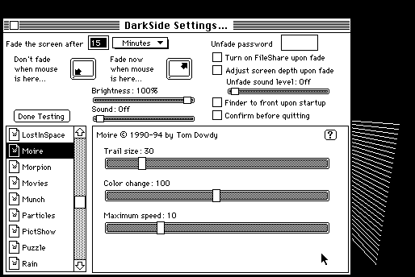

Download
DarkSide42.zip (717K) DarkSide of the Macintosh 4.2 repackaged into a zipped hfs disk image and checksum file. The disk image can be mounted with Mini vMac.
DarkSide42.sea.hqx (1.1M) DarkSide of the Macintosh 4.2 in the original format.
copyright: Tom Dowdy
mod date: Apr 1, 1994
license: free for non-commercial use
from url :
DarkSide of the Macintosh
An “application based screen saver that requires System 7”. A later version, 5.0.6, is also available (as shareware), but it doesn't seem to work quite right on the Macintosh Plus. Version 2.5 also available for “System 6.0.x” (see below).

Download Version 2.5
DarkSide25.zip (135K) DarkSide of the Macintosh 2.5 repackaged into a zipped hfs disk image and checksum file. The disk image can be mounted with Mini vMac.
DarkSide25.sit.hqx (381K) DarkSide of the Macintosh 2.5 in the original format.
If you find these downloads useful, please consider helping the Gryphel Project, which hosts them.
Here are the md5 checksums for the downloads, signed with Gryphel Key 5:
--------- GRY SIGNED TEXT --------- a2ce948c747a9b0de120842f300ba6f2 DarkSide42.zip cdedf77a75b4ecf5dd19547830156f7b DarkSide42.sea.hqx e616e29735a6042a58226f2a81ea590f DarkSide25.zip 7f9cb07605570d2eea17d955bb1ba777 DarkSide25.sit.hqx ------- BEGIN GRY SIGNATURE ------- Gry/4Xa8CFcUzxdN/LSEz4ZzIJBEVu5dmR33ozR5xuNIuhCE1dFaD+t5PGJ1xb75 hYrDIxBEMYGvebaHEzktWgFWSqQcI6+VGRGC1+lb7B0LHkbujuAXfzqv/pHBiMSw p2wXByevRyKTG7mXLY3AaNwfm7GQU3QM1ml2pKXILYZDOSWA2nHm7PI8b6Gu/0pT -------- END GRY SIGNATURE --------